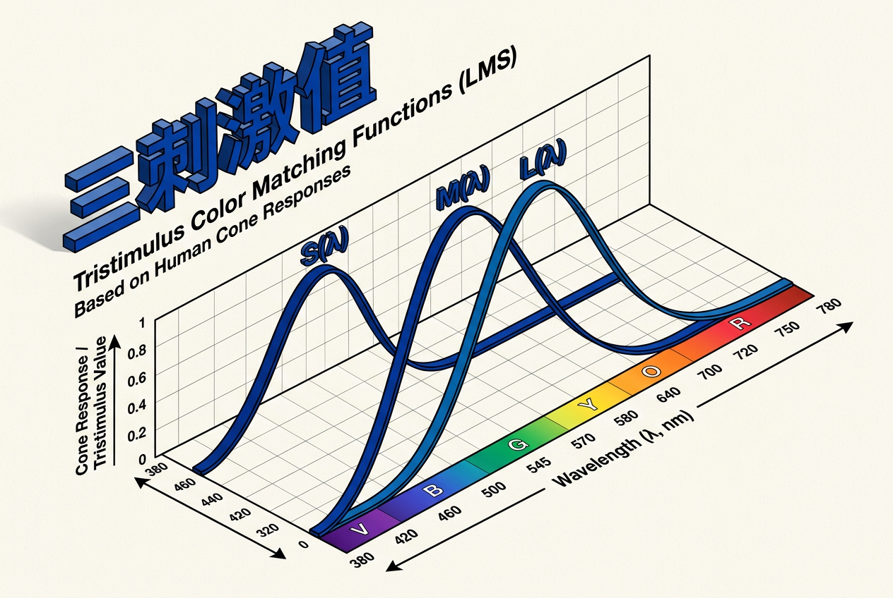
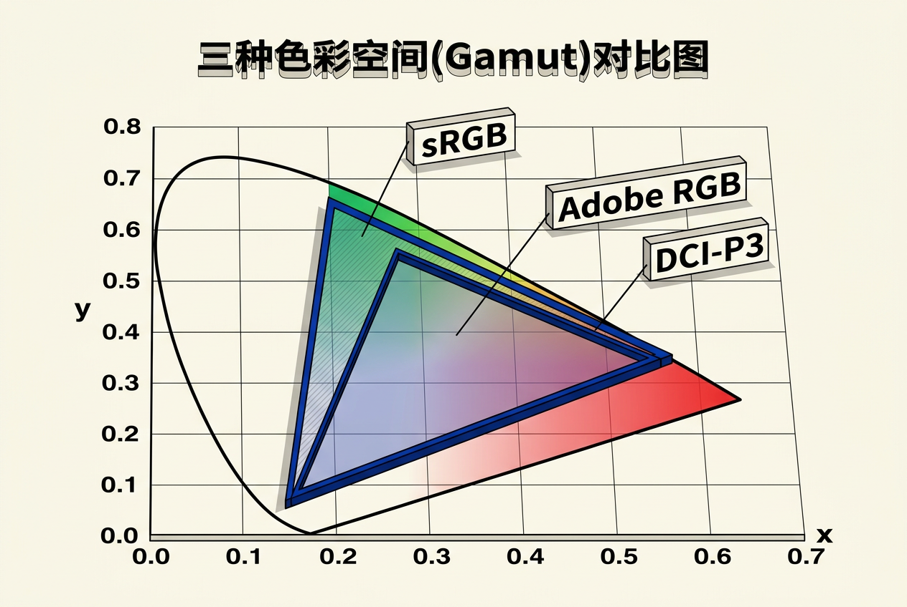
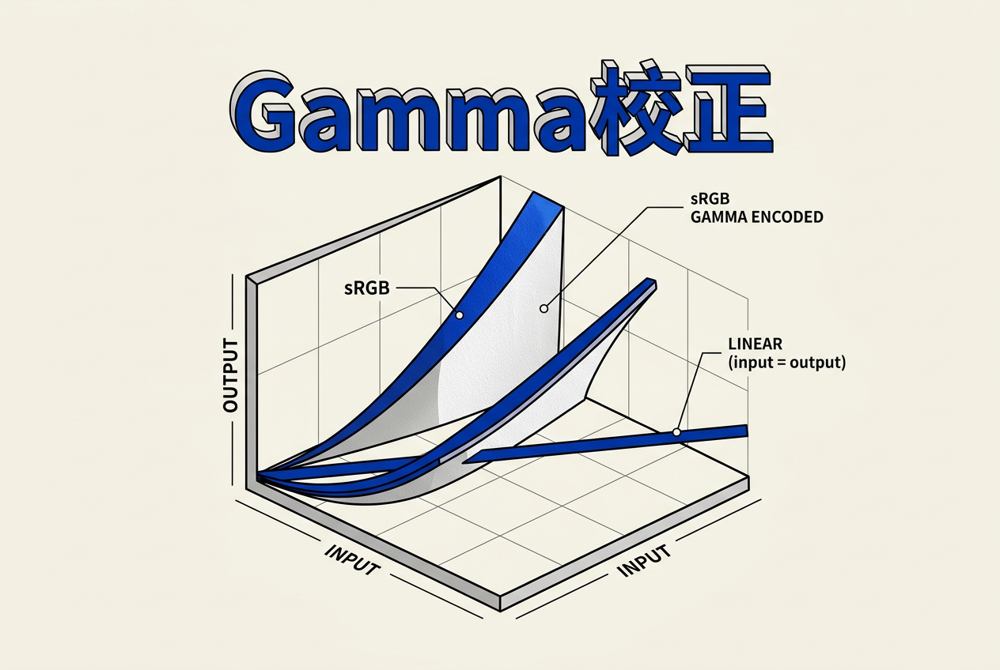
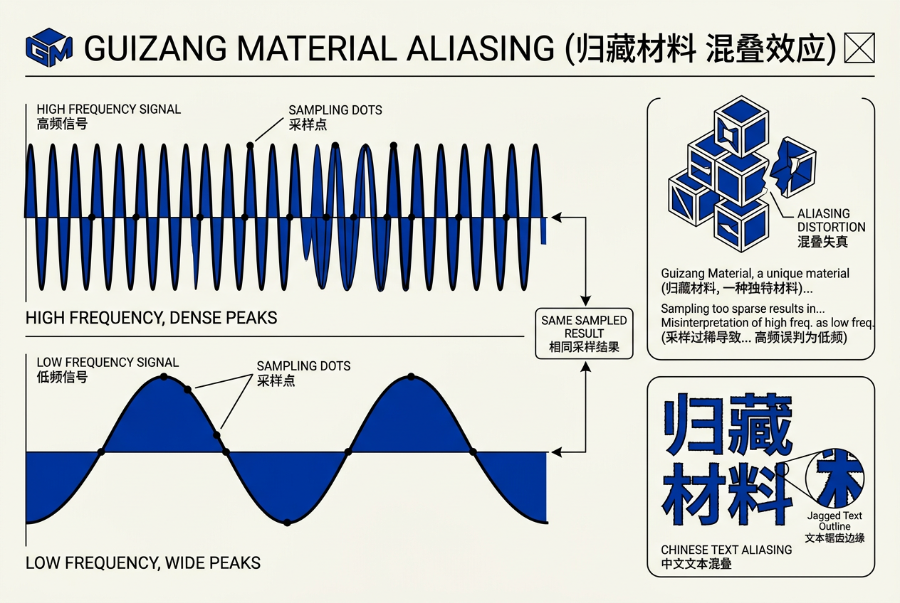
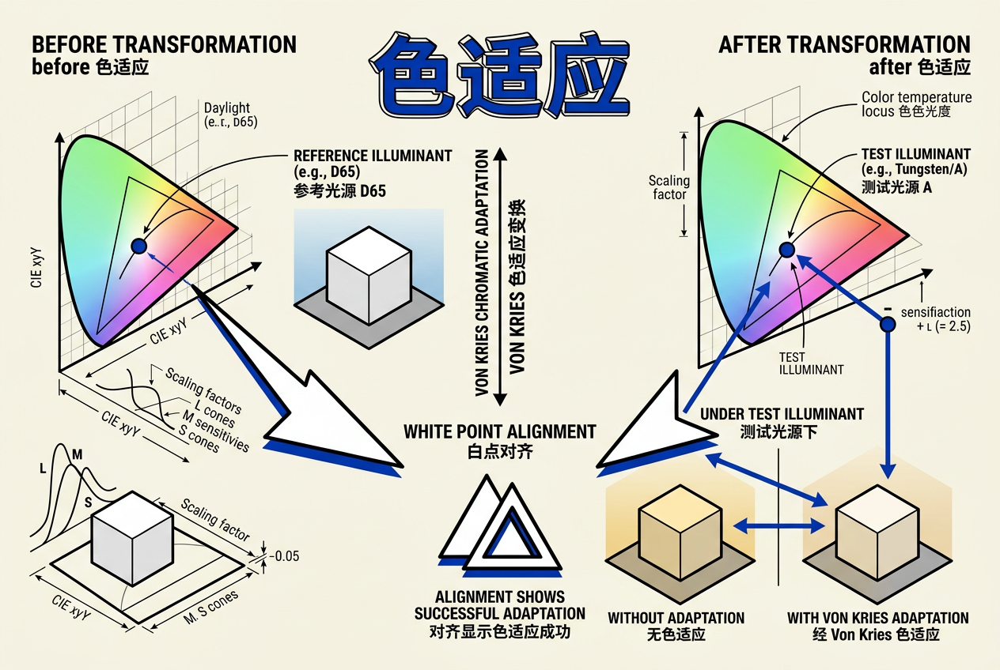

第18章：颜色 — 零基础讲义
讲义说明
本讲义基于 Steve Marschner & Peter Shirley 所著《虎书5》第5版第18章（p.503-524）。
本章是图形学的"色彩"——它告诉你：颜色不是"红绿蓝"这么简单，背后有一整套色彩科学（Color Science）。
学完本章，你将真正理解色度学、色域、白点、Gamma 校正、色温等 PBR 渲染的基石。
本版插画采用 Guizang 材质插画风格重新绘制。
18.0 为什么需要学"颜色"？
你可能觉得"颜色就是 RGB"——你已经用了很多年 RGB 了。但 为什么 255, 0, 0 是红色？为什么 255, 255, 255 是白色？为什么显示器上的颜色和打印出来的不一样？
这些问题表面上很简单，但它们通往一门严谨的科学——色彩科学。PBR 渲染、HDR、色彩管理——所有这些现代图形学技术，离开了对颜色的深刻理解就会出 bug。
这一章的目标：
- 理解颜色的物理学——光谱 SPD
- 掌握色度学（Colorimetry）：三刺激值、配色函数
- 理解 CIE XYZ 颜色空间及其意义
- 掌握色品图（Chromaticity Diagram）——马蹄形
- 理解色域（Gamut） 与色域映射
- 掌握白点 和色温
- 理解色适应（Chromatic Adaptation）
- 掌握Gamma 校正
你有过这些困惑吗？
- 为什么 PS 里的"色相/饱和度"调整在 RGB 图像上效果那么奇怪？
- 为什么你的游戏截图在手机上看太暗、在显示器上看太亮？
- 为什么印刷出来的照片和屏幕上看到的不一样？
- 为什么同一个 3D 场景在 Unity 和 Unreal 中颜色不同？
所有这些问题的答案都在本章中。
这就是色彩管理的核心问题——不同设备用不同的方式产生颜色，我们要确保它们看起来一致。
18.1 什么是颜色？
18.1.1 颜色的来源
颜色 = 人类视觉系统对光谱的感知
光是一种电磁波。不同的波长对应不同的颜色：
| 波长 (nm) | 颜色 |
|---|---|
| 380~450 | 紫色 / 蓝色 |
| 450~495 | 蓝色 |
| 495~570 | 绿色 |
| 570~590 | 黄色 |
| 590~620 | 橙色 |
| 620~780 | 红色 |
但自然光几乎从不会是单一波长——它是许多波长的混合。描述这种混合的工具叫 SPD（Spectral Power Distribution，光谱功率分布）。
struct SPD {
float power[81]; // 380nm ~ 780nm, 每5nm一个采样
float operator()(float lambda) {
// 插值采样
}
};18.1.2 颜色 = 光 × 物体 × 眼睛
颜色的产生有三个要素：
- 光源：SPD(λ)（如 D65 日光）——决定了有哪些波长的光可用
- 物体：反射率 R(λ)（如绿草、红苹果）——决定了哪些波长的光被反射
- 眼睛：LMS 锥体响应函数——决定了你怎么感知这些光
18.2 人类视觉系统
18.2.1 为什么人眼只用 3 种传感器？
我们的视网膜上有两种感光细胞：
- 锥体（Cones）：负责颜色视觉，有 3 种类型
- 杆体（Rods）：负责暗视觉，只有一种类型（无色）
| 细胞 | 类型 | 峰值波长 | 敏感性 |
|---|---|---|---|
| L cones | 长波 | ~565 nm | 红 |
| M cones | 中波 | ~535 nm | 绿 |
| S cones | 短波 | ~440 nm | 蓝 |
| Rods | 暗视觉 | ~500 nm | 无色 |

锥体响应函数——每种锥体对入射光谱按波长积分：
M = ∫ S(λ) · M_bar(λ) dλ
S = ∫ S(λ) · S_bar(λ) dλ
| 符号 | 含义 | 白话翻译 |
|---|---|---|
| S(λ) | 入射光的 SPD（光谱功率分布） | 到达眼睛的光在每个波长上的能量 |
| L_bar(λ) | L 锥体对不同波长的敏感度 | L 锥体"喜欢"哪些波长 |
| L | L 锥体的最终响应值 | 对所有波长的贡献求和 |
| ∫ dλ | 对波长积分 | 把每个波长的贡献加起来 |
18.2.2 锥体响应的数学拆解
每种锥体的响应是一个积分——把光谱上每个波长的能量乘以该锥体对该波长的敏感度，然后加起来：
| 符号 | 含义 | 白话翻译 |
|---|---|---|
| S(λ) | 入射光的光谱功率分布 | 每个波长上的"能量"有多少 |
| L̄(λ) | L锥体的光谱敏感度函数 | L锥体对不同波长的"喜好程度" |
| S(λ)·L̄(λ) | 逐波长乘积 | 波长λ处的光 × 该波长的敏感度 |
| ∫dλ | 对所有波长积分 | 把所有波长的贡献加起来 |
| L | L锥体的总响应 | 一个数，描述"有多红" |
数值例子：假设光谱 S(λ) 只在 565nm 处有能量 = 1，其他地方为 0：
L = S(565) × L̄(565) × Δλ = 1 × 1.0 × 5 ≈ 5.0 (大响应，因为 565nm 是 L 锥体峰值)
M = S(565) × M̄(565) × Δλ = 1 × 0.5 × 5 ≈ 2.5 (中等响应)
S = S(565) × S̄(565) × Δλ = 1 × 0.0 × 5 ≈ 0.0 (无响应)18.2.3 同色异谱（Metamerism）
同色异谱 = "两个不同 SPD 看起来完全一样"
因为人眼只通过 3 个通道（LMS）来感知颜色，所以完全不同的光谱分布可以产生完全相同的 LMS 三刺激值——从而看起来是"同一个颜色"。
// 两种 SPD 产生完全相同的颜色
SPD spd1, spd2;
float L1 = integrate(spd1, L_bar); // spd1 的 L 响应
float L2 = integrate(spd2, L_bar); // spd2 的 L 响应
// L1 == L2, M1 == M2, S1 == S2 -> 颜色完全一致因为荧光灯和太阳的 SPD 完全不同！虽然它们都是"白光"，但光谱成分不一样，导致物体反射光进入你眼睛的 LMS 响应也不同。这就是同色异谱的局限性——同一个物体在两种光源下可能是不同颜色。所以高端商品看色要用标准光源（如 D65）。
18.3 色度学（Colorimetry）
18.3.1 为什么需要色度学？
人眼有 3 种锥体，所以理论上用 3 个数值就能描述任何颜色。但问题是：这 3 个数值跟具体的锥体响应有关——不同人的锥体敏感度不同怎么办？色度学的目标就是定义标准化的、与人无关的颜色描述体系。
18.3.1 从 LMS 到 CIE 的动机
LMS 是生理学空间——它描述了你眼睛里的 3 种锥体对光的响应。但不同人的锥体敏感度有细微差异。为了工程上的可重复性，CIE 定义了一个"标准观察者"——用一组固定的配色函数代替了个体差异。
换句话说：LMS = "你的眼睛"，CIE = "标准化的眼睛"。
18.3.2 CIE RGB 配色函数
CIE 1931：用 3 种固定原色"匹配"任意颜色
| 原色 | 波长 | 颜色 |
|---|---|---|
| R | 700.0 nm | 红色 |
| G | 546.1 nm | 绿色 |
| B | 435.8 nm | 蓝色 |
配色函数：对于任意光谱 S(λ)，算出匹配这个颜色需要的 R、G、B 量：
G = ∫ S(λ) · g_bar(λ) dλ
B = ∫ S(λ) · b_bar(λ) dλ
问题：某些光谱需要负值 R才能匹配——很不直观。负的红色意味着你需要在被试者那一侧加红光，而不是在测试侧。这在实际使用中很不方便。
18.3.3 CIE XYZ 标准观察者
CIE XYZ：把 CIE RGB 变换到"全正值"空间
CIE 在 1931 年做了一个线性变换，把 RGB 变换到 XYZ 空间，使得所有值都是正数：
[Y] = [ 0.17697 0.81240 0.01063 ] [G]
[Z] [ 0.00000 0.01000 0.99000 ] [B]
| 符号 | 含义 | 白话翻译 |
|---|---|---|
| X | 红色响应（正比于红-绿感知） | 近似红色的量 |
| Y | 亮度（Luminance） | 可见光的"强度"——跟人眼感受到的明亮程度对应 |
| Z | 蓝色响应 | 近似蓝色的量 |
- Y = 亮度（Luminance）——唯一包含亮度信息的通道
- X, Z = 色度（没有亮度信息）
- 所有值都是正数
- XYZ 是后续所有色彩空间的基础
18.3.4 色品图（Chromaticity Diagram）
色品图 = "去掉亮度的颜色 2D 表示"
把 XYZ 归一化，去掉亮度信息，就得到了色品坐标：
y = Y / (X + Y + Z)
因为 x + y + z = 1，所以只需要 x 和 y 两个值就能完整描述色度（去掉了亮度）。

| 概念 | 含义 | 图形解释 |
|---|---|---|
| 马蹄形边界 | 光谱轨迹（Spectrum Locus） | 弧线 = 纯光谱色（单波长），马蹄内部 = 混合色 |
| 底部直线 | 纯紫线（Line of Purples） | 连接光谱两端的直线，紫色不在光谱中（不存在"紫色的波长"） |
| 内部三角形 | 设备色域 | 显示器能显示的颜色是马蹄内部的一个三角形 |
数值计算示例：SPD → XYZ → xy
假设我们有一个简单的 SPD——只在 500nm 处有能量 1.0，其余为 0：
// SPD：单一波长 500nm（绿色光）
// 查 CIE 1931 配色函数表：
x̄(500) = 0.0049, ȳ(500) = 0.3230, z̄(500) = 0.2720
// 三刺激值
X = 1.0 × 0.0049 = 0.0049
Y = 1.0 × 0.3230 = 0.3230 (即亮度)
Z = 1.0 × 0.2720 = 0.2720
// 色品坐标
x = 0.0049 / (0.0049 + 0.3230 + 0.2720) = 0.0082
y = 0.3230 / (0.0049 + 0.3230 + 0.2720) = 0.5385
// → 色品坐标 (0.008, 0.538) ≈ 纯绿色18.3.5 色域（Gamut）
色域 = "设备能显示的所有颜色"
显示器色域在色品图上是一个三角形——三个顶点对应 R/G/B 原色。

| 标准 | 色域大小 | 应用 |
|---|---|---|
| sRGB | 约 35% CIE | 网页、显示器、手机屏幕 |
| Adobe RGB | 约 50% CIE | 印刷、专业摄影 |
| DCI-P3 | 约 45% CIE | 电影、HDR 显示（iPhone、iPad） |
| Rec.2020 | 约 75% CIE | UHDTV 标准（4K/8K） |
| ACES | 大于 100% CIE | 电影级制作（覆盖所有人眼可见色） |
18.3.6 UCS 均匀色品坐标
CIE xy 色品图虽然经典，但有一个严重问题：视觉不均匀。在色品图的不同区域，相同的距离（Δx, Δy）对应的人眼感知差异完全不同。MacAdam 在 1942 年发现了这一点——他在色品图的不同位置画出了一系列"刚好能察觉颜色差异"的椭圆（MacAdam Ellipses），这些椭圆的大小和方向随位置剧烈变化。
解决方案：CIE 1976 UCS（Uniform Chromaticity Scale）图：
v' = 9Y / (X + 15Y + 3Z)
| 属性 | CIE xy | CIE u'v' |
|---|---|---|
| 视觉均匀性 | 差（MacAdam 椭圆大小差距 > 10 倍） | 好（椭圆大小差距 < 3 倍） |
| 用途 | 经典展示、色度学教学 | 实际色域计算、色差测量 |
| 是否是线性变换 | 是（从 XYZ 直接投影） | 否（非线性投影） |
18.3.7 白点（White Point）
白点 = "显示器/光源的'白色'坐标"
你可能会想"白色就是白色，还有什么不同的白色？"——但不同的光源有不同的"白色"：白炽灯偏黄，日光偏白，阴天偏蓝。白点就是这些白色在色品图上的坐标。
| 白点 | 色品坐标 | 色温 | 用途 |
|---|---|---|---|
| D65 | (0.3127, 0.3290) | 6500K | sRGB / HDTV 标准 |
| D50 | (0.3457, 0.3585) | 5000K | 印刷标准 |
| D93 | (0.2830, 0.2970) | 9300K | 早期 CRT 显示器 |
色温：低 K = 暖（偏红），高 K = 冷（偏蓝）。所以 5500K 的闪光灯比 3200K 的白炽灯更"白"。
色温与黑体辐射的关系：
| 温度 | 颜色 | 例子 |
|---|---|---|
| ~1800 K | 橙红 | 蜡烛火焰 |
| ~2800 K | 暖黄 | 家用白炽灯 |
| ~3200 K | 暖白 | 摄影卤素灯 |
| ~5500 K | 中白（日光） | 正午阳光 |
| ~6500 K | 冷白（D65） | 阴天、sRGB 标准 |
| ~9300 K | 偏蓝 | 早期 CRT 显示器 |
注意：颜色中的"暖色"（红/橙）对应低色温，"冷色"（蓝）对应高色温——这和日常直觉相反，但在物理学和色彩学中，温度越高颜色越偏蓝。
18.3.10 色域映射
当你把一个高色域的图片显示在低色域显示器上时，超出色域的颜色需要被"映射"到显示器能显示的范围内：
| 映射策略 | 做法 | 效果 |
|---|---|---|
| 裁剪（Clip） | 超出色域的颜色直接截断到边界 | 颜色鲜艳但损失细节（色块） |
| 压缩（Compress） | 整体向色域中心压缩 | 保留细节但整体饱和度降低 |
| 感知映射（Perceptual） | 尽量保持感知差异 | 效果好但计算复杂 |
18.3.8 色差公式 ΔE
在实际应用中（如质检、印刷），经常需要回答一个问题："这两个颜色差多少？" 直接算 RGB 距离是不行的——因为 RGB 空间感知不均匀。解决方案是用 Lab 空间的欧几里得距离：
| ΔE 值 | 人眼感知 |
|---|---|
| < 1 | 几乎看不出差别 |
| 1~3 | 仔细对比才能看出 |
| 3~6 | 可以明显看出差别 |
| > 6 | 完全不同的颜色 |
更现代的 CIE DE2000（ΔE00）对蓝色区域的误差做了进一步修正——这是当前色彩科学的标准色差公式。
18.4 Gamma 校正
18.4.1 为什么需要 Gamma？
CRT 显示器亮度 ≠ 输入电压的线性关系
老式 CRT 显示器有一个物理特性：输入电压和显示亮度之间不是线性关系，而是幂律关系：
典型 CRT 的 gamma = 2.2。所以如果你存了 0.5 这个值，显示器实际输出的亮度是 0.52.2 ≈ 0.22——太暗！

18.4.2 Gamma 校正的原理
解决方法是：存储时预先做逆变换，显示时 CRT 的自然 gamma 会自动还原：
最终亮度 = (original1/2.2)2.2 = original
完整的 Gamma 校正流程（用数字说话）：
| 步骤 | 操作 | 值 | 说明 |
|---|---|---|---|
| ① 物理亮度 | 你想要的亮度 | 0.5 | 物理上 50% 的亮度 |
| ② 编码 | pow(0.5, 1/2.2) | 0.73 | 做 gamma 编码，存入图片文件 |
| ③ 存储 / 传输 | 存为 0.73 | 0.73 | PNG/JPG 中存的是 0.73 |
| ④ CRT 显示 | pow(0.73, 2.2) | 0.5 | CRT 的自然 gamma 还原了亮度 |
| ⑤ 最终亮度 | 回到 0.5 ✓ | 0.5 | 完美还原！ |
如果忘记 gamma 校正：
| 步骤 | 操作 | 值 | 说明 |
|---|---|---|---|
| ① 物理亮度 | 你想要的亮度 | 0.5 | |
| ② 直接存储 | 存为 0.5 | 0.5 | 没有做 gamma 编码 |
| ③ CRT 显示 | pow(0.5, 2.2) | 0.22 | 显示器自动做 gamma |
| ④ 最终亮度 | 实际只有 0.22 | 0.22 | 太暗了！！ |
18.4.3 sRGB Gamma 的完整公式
// sRGB 到线性空间（解码）——把 sRGB 图片还原为真实亮度
float sRGB_to_linear(float c) {
if (c <= 0.04045) return c / 12.92;
else return pow((c + 0.055) / 1.055, 2.4);
}
// 线性到 sRGB（编码）——把计算结果存为 sRGB 图片
float linear_to_sRGB(float c) {
if (c <= 0.0031308) return c * 12.92;
else return 1.055 * pow(c, 1/2.4) - 0.055;
}线性 ≈ pow(sRGB, 2.2)
光照计算（如漫反射 = n·l）假设光强度以线性方式叠加——两倍的光就是两倍的亮度。但 sRGB 是经过 gamma 编码的非线性空间，数值 0.5 并不代表"一半的亮度"（实际上是 0.5^2.2 ≈ 0.22）。所以在 sRGB 空间做光照，你的计算结果会完全偏离物理真实。总是先解码到线性空间，算完了再编码回 sRGB。
18.4.4 Gamma 与 sRGB 的实际影响
在现代图形学中，gamma 校正的影响无处不在：
- 纹理贴图：所有照片和手绘纹理都是 sRGB 编码的。采样后必须解码到线性空间再做光照。
- 光照计算：所有物理光照模型（Lambert、Phong、PBR）都需要在线性空间计算。
- 抗锯齿：在 sRGB 空间做抗锯齿混合会导致边缘变暗（因为 0.5 在 sRGB 中不等于一半亮度）。
- HDR 渲染：色调映射后的结果需要编码到 sRGB 才能正确显示。
18.4.5 sRGB 与 Gamma 的常见误解
| 误解 | 正确理解 |
|---|---|
| Gamma 只是 CRT 的历史遗留问题 | 现代 LCD/LED 显示器为了兼容 sRGB 标准，仍然模拟了 gamma 2.2 响应 |
| 所有图片格式都是线性的 | PNG、JPG、GIF 等绝大多数图片格式都使用 sRGB gamma 编码 |
| 线性空间和 sRGB 空间可以互相替换 | 绝对不行！线性空间的 0.5 ≠ sRGB 的 0.5 |
18.5 色适应（Chromatic Adaptation）
18.5.1 为什么需要色适应？
你的大脑非常神奇：在暖色灯光下看一张白纸，它看起来还是白的。但实际上白纸反射的光偏黄了——只是你的大脑"自动做了白平衡"。这个现象叫色适应。
在图形学中，如果你渲染一个场景使用了 5000K 的光源（暖色），但显示在 6500K 的显示器上（冷色），你需要把颜色从 5000K 的感知"适应"到 6500K 的显示——这就是 von Kries 色适应模型做的事。
18.5.2 von Kries 系数律

von Kries 模型假设色适应就是在 LMS 空间中独立缩放每个通道的响应：
M' = β · M
S' = γ · S
| 符号 | 含义 |
|---|---|
| L, M, S | 源颜色在 LMS 空间的值 |
| α, β, γ | 每个通道的缩放因子（由源白点和目标白点决定） |
| L', M', S' | 适应后的颜色 |
计算 α, β, γ 的步骤（以 D65 → D50 为例）：
// 源白点 D65 (6500K) 在 XYZ 空间
XYZ_D65 = (0.9505, 1.0000, 1.0890)
// 目标白点 D50 (5000K) 在 XYZ 空间
XYZ_D50 = (0.9642, 1.0000, 0.8249)
// 用 Bradford 变换矩阵 M 转换到 LMS 空间
LMS_D65 = M × XYZ_D65 // → (L_d65, M_d65, S_d65)
LMS_D50 = M × XYZ_D50 // → (L_d50, M_d50, S_d50)
// 缩放因子 = 目标/源
α = L_d50 / L_d65 // LMS 各通道的比例因子
β = M_d50 / M_d65
γ = S_d50 / S_d65完整的变换流程：
步骤拆解：
- 用 M 矩阵把 XYZ 变换到 LMS 空间
- 在 LMS 空间用 α, β, γ 缩放（白点对齐）
- 用 M-1 变换回 XYZ 空间
18.5.3 Bradford 与 CAT02 变换矩阵
从 XYZ 到 LMS 的变换有很多种选择，不同的矩阵适合不同的用途：
| 变换 | 用途 | 特点 |
|---|---|---|
| Bradford | 最常用的色适应变换 | 对蓝色通道的适应更准确，广泛应用于 ICC 色彩管理 |
| CAT02 | CIE 推荐的色适应变换 | 在 CIECAM02 色貌模型中使用 |
| von Kries 原始 | 经典理论模型 | 简单但准确度不如后来者 |
// Bradford 变换矩阵（XYZ → LMS）
mat3x3 M_Bradford = {
0.8951, 0.2664, -0.1614,
-0.7502, 1.7135, 0.0367,
0.0389, -0.0685, 1.0296
};
// 使用 Bradford 变换做色适应：
// 1. M × XYZ_source → LMS_source
// 2. 按比例缩放 LMS 各通道
// 3. M^(-1) × LMS_adapted → XYZ_adaptedX = L, Y = M, Z = S？
因为 CIE XYZ 是人为构造的虚拟原色，而 LMS 是生物学上测量的锥体响应。从虚拟到生物需要线性变换来"对齐"。Bradford 和 CAT02 都是基于实际实验数据拟合出来的，它们能把 XYZ 空间旋转到更接近人眼感知的方向。
18.6 颜色模型
18.6.1 RGB 模型
简单直接——每个通道独立，对应显示器硬件。
| 优势 | 劣势 |
|---|---|
| 硬件原生（显示器直接使用） | 和亮度/饱和度不直观 |
| Shader 友好（直接操作） | 调整"更亮"需要同时改 R、G、B |
RGB 相加混合 vs 颜料相减混合：
| 混合方式 | 原理 | 例子 |
|---|---|---|
| 加法混色（显示器） | RGB 光叠加，越加越亮 | 红+绿=黄，红+绿+蓝=白 |
| 减法混色（颜料） | 吸收光，越混越暗 | 黄+蓝=绿，青+品红+黄=黑 |
18.6.2 HSV / HSL 模型
更直观——艺术家友好，分离出色相、饱和度、亮度/明度。
| 分量 | HSV | HSL |
|---|---|---|
| H（色相） | 0°-360° | 0°-360° |
| S（饱和度） | 0-1 | 0-1 |
| V / L | 亮度（Value） | 明度（Lightness） |
问题：和感知无关——饱和度增加 0.1 在黄色和蓝色上的视觉变化完全不同。数学性质也不好（非线性）。
18.6.3 CIE Lab / Lch 模型
感知均匀——Lab 空间中两个颜色的"距离"与人的感知差异成正比。
| 分量 | 含义 |
|---|---|
| L | 亮度（Lightness） |
| a | 红-绿轴（+红，-绿） |
| b | 黄-蓝轴（+黄，-蓝） |
| C = √(a²+b²) | 色度（Chroma） |
| h = atan2(b, a) | 色相角（Hue angle） |
Lab 的数学定义（从 XYZ 变换）：
// 辅助函数 f(t)
float f(float t) {
if (t > (6/29)³)
return pow(t, 1/3);
else
return t / (3 * (6/29)²) + 4/29;
}
// XYZ_n = 白点的 XYZ 坐标
L = 116 * f(Y / Y_n) - 16; // L 范围 [0, 100]
a = 500 * (f(X / X_n) - f(Y / Y_n)); // 红-绿
b = 200 * (f(Y / Y_n) - f(Z / Z_n)); // 黄-蓝| 条件 | 含义 |
|---|---|
| a > 0 | 偏红色 |
| a < 0 | 偏绿色 |
| b > 0 | 偏黄色 |
| b < 0 | 偏蓝色 |
| a = 0 且 b = 0 | 灰色（无色） |
因为 RGB 空间中，R、G、B 三个通道高度耦合——调整"亮度"需要同时改变三个通道的值，而且很容易产生色偏。Lab 空间把亮度（L）和颜色信息（a、b）完全分离。调整 L 通道只改变亮度，不影响色调；调整 a、b 通道只改变颜色，不影响亮度。这就是 Photoshop 中"明度"和"色相/饱和度"分开调整的原理。
18.7 颜色在图形学中的应用
18.7.1 PBR 中的颜色管理
PBR = 物理正确的颜色管理
Input → Linearize → PBR Shading → Display Adapt → sRGB Output
(纹理) (Gamma-) (物理光) (色适应) (Gamma+)
(校正) 照计算) (校正)这条管线是现代渲染引擎的标配：
- Linearize：sRGB 纹理 → 线性空间（解码 gamma）
- PBR Shading：在线性空间做物理光照计算
- Display Adapt：色适应（从场景白点变换到显示器白点）
- sRGB Output：线性结果 → sRGB 编码（编码 gamma）
完整的颜色管线示例（从纹理到屏幕）：
// ---- 像素着色器中的颜色管理 ----
// 输入：sRGB 纹理（通道值 0-255，存储时已 gamma 编码）
// 第1步：采样纹理得到 sRGB 颜色
vec4 texColor_sRGB = texture(sRGBTexture, uv);
// 第2步：解码到线性空间（sRGB → 线性）
vec3 texColor_linear = sRGB_to_linear(texColor_sRGB.rgb);
// 第3步：在线性空间做光照计算（所有物理计算都在这里）
vec3 diffuse = kd * lightIntensity * max(0.0, dot(n, l));
vec3 specular = ks * lightIntensity * pow(max(0.0, dot(n, h), 32.0));
// 第4步：合成最终线性颜色
vec3 finalColor_linear = (diffuse + specular) * texColor_linear;
// 第5步：色调映射（HDR → LDR）
vec3 mapped = tonemap(finalColor_linear);
// 第6步：编码回 sRGB 用于显示
vec3 outputColor = linear_to_sRGB(mapped);
fragmentColor = vec4(outputColor, 1.0);18.7.2 色温与白平衡
日光（D65 = 6500K）的色品坐标：
白平衡调整：如果光源改变，对 RGB 通道分别缩放：
G' = G / G_white
B' = B / B_white
其中 R_white、G_white、B_white 是白点在 RGB 空间的坐标。
18.7.3 ACES 颜色空间
ACES（Academy Color Encoding System）——电影行业的色彩管理标准：
- 色域超过 CIE XYZ（覆盖所有人眼可见颜色）
- 包含完整的色彩管理流程（输入→处理→输出）
- PBR 渲染中的"黄金标准"
CIE XYZ 的色域并不是"最大"的——它的原色是虚拟的。ACES 使用 AP0 原色，其三角形在色品图上比 CIE 马蹄形还要大，这意味着有些 AP0 颜色其实不在可见光谱内。这是故意设计的——这样任何可见颜色都能用 ACES 表示，不会出现"超出色域"的情况。简单说：ACES 造了一个比可见光谱更大的容器，确保容得下所有颜色。
18.8 全章总结
核心洞察：颜色不是"红绿蓝"——是光谱 × 眼睛 × 显示器的三方博弈。
| 概念 | 一句话 | 关键公式 |
|---|---|---|
| 3 种锥体 | 人眼只用 3 个通道感光，所以 3 通道够用 | L = ∫S(λ)·L̄(λ)dλ |
| 同色异谱 | 不同光谱、相同颜色 | LMS 积分结果相同 |
| CIE XYZ | 标准色彩空间，Y 等于亮度 | X=∫S·x̄dλ, Y=∫S·ȳdλ |
| 色品图 | 去掉亮度的 2D 颜色图 | x=X/(X+Y+Z), y=Y/(X+Y+Z) |
| 色域 | 设备能显示的颜色范围 | 色品图上的三角形 |
| Gamma | 存储非线性，计算线性 | V_out = V_in^γ |
| 色适应 | 大脑自动白平衡 | L'=α·L, M'=β·M, S'=γ·S |
| ACES | 电影级色彩管理 | AP0 原色矩阵 |
关键公式速查
LMS 响应: L=∫S(λ)·L̄(λ)dλ, M=∫S(λ)·M̄(λ)dλ, S=∫S(λ)·S̄(λ)dλ
CIE XYZ: X=∫S(λ)·x̄(λ)dλ, Y=∫S(λ)·ȳ(λ)dλ, Z=∫S(λ)·z̄(λ)dλ
色品坐标: x=X/(X+Y+Z), y=Y/(X+Y+Z)
UCS: u'=4X/(X+15Y+3Z), v'=9Y/(X+15Y+3Z)
Gamma: V_out = V_in^γ
sRGB→线性: c_linear = sRGB_to_linear(c_sRGB)
线性→sRGB: c_sRGB = linear_to_sRGB(c_linear)
Von Kries: L'=α·L, M'=β·M, S'=γ·S
Lab: L=116·f(Y/Yₙ)-16, a=500·(f(X/Xₙ)-f(Y/Yₙ)), b=200·(f(Y/Yₙ)-f(Z/Zₙ))常见误区
| 误区 | 正确理解 |
|---|---|
| "颜色是物体的固有属性" | 颜色 = 光 × 物体反射率 × 眼睛感知——缺一不可 |
| "RGB 值直接代表亮度" | sRGB 是 gamma 编码的，0.5 ≠ 一半亮度 |
| "两个颜色看起来一样 = SPD 一样" | 同色异谱——完全不同的 SPD 可以看起来完全一样 |
| "白色就是白色" | 不同光源的白点不同（D65=6500K 偏蓝, D50=5000K 偏黄） |
| "显示器能显示所有颜色" | 显示器色域仅覆盖 CIE 色品图的 35%~80% |
一句话总结：颜色是物理（光谱）× 生物（锥体）× 工程（显示）的交叉学科。理解色彩科学 = 理解 PBR 渲染中为什么每一步颜色处理都至关重要。
下一步：第 19 章《视觉感知》——理解人类视觉如何限制图形学的终极质量。这是从"科学"到"艺术"的桥梁。